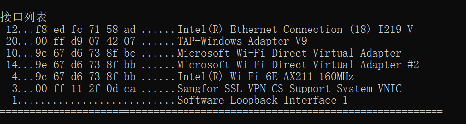
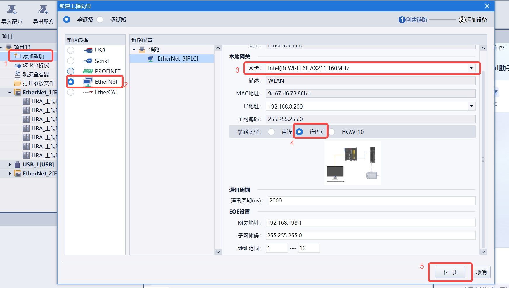
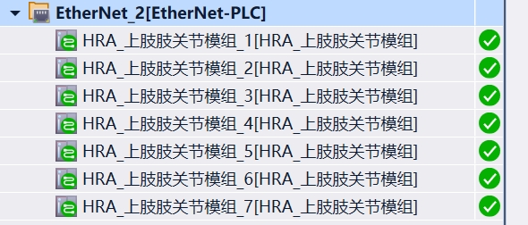

EOE功能使用方法
1. 3588网口与mac地址绑定
目前部分开发板存在网口漂移的现象，程即每次上电后系统按照扫描到物理网口的先后顺序，分配eth0以及eth1的配置，导致当前上电时对eth1的静态ip设置，大概率下次重启时对应原先eth0对应的物理网口，从而发生“主站怎么一个从站都扫不到？”类似的现象。
解决方法：绑定物理网口（网卡）mac地址与“ethi”的配置，我们将靠近电源的网卡的mac地址绑定到eth0，将远离电源网卡的地址绑定到eth1。
- 修改永久配置文件
1 | # 添加udev规则 |
注：查询某个网口的mac地址，网线拔插，观察ifconfig指令输出，看哪个mac地址对应有插入和拔出。
2. 3588Linux开启路由转发
- 临时生效
1 | sudo echo 1 > /proc/sys/net/ipv4/ip_forward |
- 永久生效
1 | # 修改 sysctl 配置文件（推荐） |
3. Windows 系统添加静态路由教程
3.1 一、前置准备
以【管理员身份】打开 CMD（否则会提示权限不足）
目标网段：192.168.198.0
转发网关：3588地址 （本例为192.168.8.116）
3.2 二、查看当前路由表（确认基础信息）
执行命令，查看网卡编号、现有路由配置：
1 | route print |
重点查看：接口列表（确认网卡编号，本例网卡选用Wifi，编号为4）

3.3 添加临时静态路由（重启后失效，适合测试）
1 | route add 192.168.198.0 mask 255.255.255.0 192.168.8.116 if 4 |
route add 192.168.198.0 mask 255.255.255.0 “RK3588地址” if “网卡编号”
提示「操作完成!」即添加成功
添加永久静态路由（重启后不失效，推荐）
1 | route add -p 192.168.198.0 mask 255.255.255.0 192.168.8.116 if 4 |
说明：-p 是 permanent（永久）的缩写，会将路由写入系统永久路由列表
3.4 验证路由是否生效
- 查看路由是否添加成功：
1 | route print |
（在 IPv4 路由表中，活动路由/永久路由会显示目标网段对应网关为192.168.8.116）
- 测试目标网段可达性（替换xxx为目标网段内具体IP）：
1 | ping 192.168.198.xxx |
第1个从站从3开始，即192.168.198.3。注意分支器在首尾，因此192.168.198.3可能是分支器，ping不通。
3.5 删除错误路由（可选）
1 | // 删除临时/永久路由（通用） |
4. 连接伺服上位机软件iDA
- EOE连接，扫描设备

- 扫描成功结果

可以正常使用伺服上位机软件监控参数，采集波形，修改功能码。